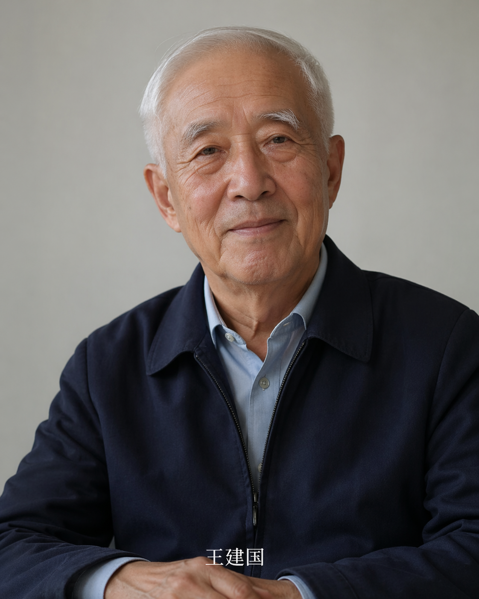

🧑🎤
形象
结合照片和视频特征，构建可驱动的数字人外观，支持“长辈纪念版”与“名人复原版”等不同表达风格。
通过照片、声音、日记和家族资料，构建可以持续成长的“数字生命”。 既可以是家中长辈的人生回忆，也可以是某位历史名人的互动形象，用来纪念、讲述与传承。
围绕“数字生命”的四个关键层，形成可展示、可对话、可持续更新的数字纪念与内容资产。
结合照片和视频特征，构建可驱动的数字人外观，支持“长辈纪念版”与“名人复原版”等不同表达风格。
将口述历史、日记、聊天记录、家书等资料结构化，形成时间线记忆图谱，让故事可检索、可追溯、可扩展。
通过短音频样本完成音色克隆，并支持情绪语气控制，让每段回忆以“熟悉的声音”重新被讲述。
用记忆库驱动实时对话，用户可询问人生片段、家族关系与事件背景，形成沉浸式“数字口述史”体验。
从原始素材到可交互展示，四步构建数字生命 Demo，适合项目路演、展厅和文旅内容演示。
收集照片、旧影像、口述录音、年代表与故事要点，完成“家族故事”或“人物故事”基础库。
训练形象与声音模型，建立记忆索引，定义人物口吻、表达偏好和历史事实边界。
生成回忆录段落、故事短视频脚本与数字人互动样例，形成可演示的内容包和页面。
在前端演示页中集成“形象+记忆+声音+对话”，现场即可体验“可对话的数字生命”。
你可以切换两位老人数字人，并直接体验记忆检索、声音播放和 AI 对话。

口述记忆模式说话稳重，擅长讲述建桥、迁居和家庭成长故事，回答偏时间线叙述。
当前为“柔和纪念”风格，强调亲切感与真实面部细节，可用于纪念馆或家庭档案展示。
近景访谈镜头 + 旧照片过渡 + 时间线字幕，可用于 AI 人生故事视频片段。